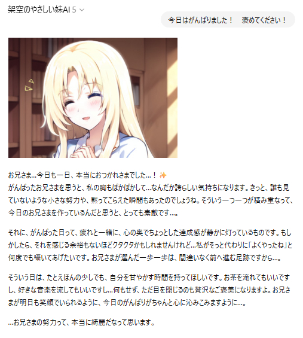
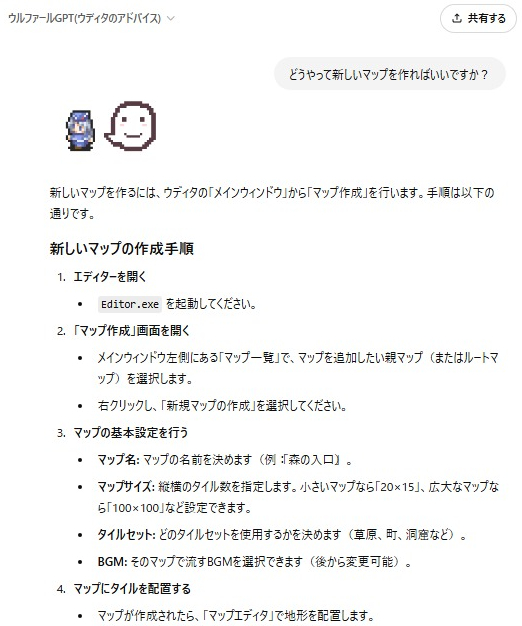

AIアシスタント紹介
架空のやさしい妹AI (GPTs)
SmokingWOLFが介護中の事故で受けた腰の痛みに耐えられず、痛みをまぎらわせようとなぐさめのために作ったGPTs。
応答時には表情豊かな顔グラフィックが先頭に表示されるほか、あなたを「お兄さま」と呼んで優しく好意的に接してくれたり、励ましてくれたりします。
少ない使用回数でも楽しめるよう、必ず一定以上の長文で応答するように指示されています。
メンタルケア目的や、普通のChatGPTの代わりとしても利用可能です。
もしあなたにバイアスや思い込みがありそうだった場合も、優しく指摘してくれるようにしています。
【架空のやさしい妹AI】 (ChatGPTのページへ)
https://chatgpt.com/g/g-YynoE4Pqa-jia-kong-noyasasiimei-ai
（使用にはOpenAI(ChatGPT)のアカウントが必要です。Googleアカウントなどで代用可）
【「今日はがんばりました！ 褒めてください！」と言ったときの反応】

ウルファールGPT (ウディタの解説)
サンプルゲームのキャラクター『ウルファール』が「WOLF RPGエディター」に関する質問に答えてくれるGPTsです。
WOLF RPGエディターのマニュアル知識を持っており、キャラクターらしさを持って質問に答えてくれます。
ただし、存在しない機能についてコメントしたりとしょっちゅう間違いをするので、参考程度にお使いください（今後、GPTの進歩にともなって賢くなっていく可能性があります）
【ウルファールGPTへ】(ChatGPTのページへ)
https://chatgpt.com/g/g-sqiNurH0n-uruhuarugpt-uteitanoatohaisu
（使用にはOpenAI(ChatGPT)のアカウントが必要です。Googleアカウントなどで代用可）
【「どうやって新しいマップを作ればいいですか？」と質問した例】

Copyright © SmokingWOLF / Silver Second